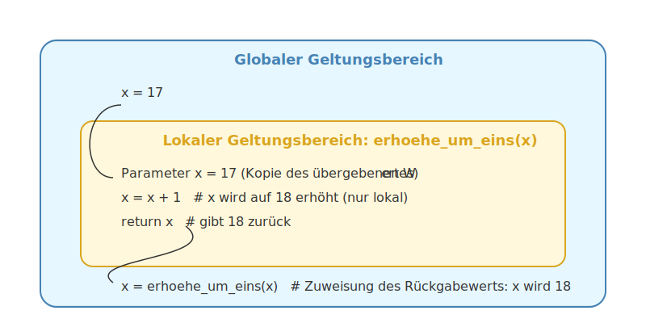

6.3 Lokale und globale Variablen#
In Python gibt es zwei Arten von Variablen: lokale und globale Variablen. Der Unterschied zwischen beiden liegt in ihrem Geltungsbereich (auch “Scope” genannt), also wo im Programm sie verwendet werden können. Vor allem bei der Definition von Funktionen ist die Nichtbeachtung des Unterschieds eine häufige Fehlerquelle, weshalb wir in diesem Kapitel den Unterschied beleuchten.
Lernziele#
Lernziele
Sie kennen den Unterschied zwischen lokalen und globalen Variablen.
Sie können erklären, warum die Trennung von lokalen und globalen Variablen wichtig ist.
Sie wissen, wie Sie Werte aus Funktionen an das Hauptprogramm zurückgeben können.
Lokale Variablen#
Schauen Sie sich bitte folgende Funktionsimplementierung an. Was macht die Funktion?
def erhoehe_um_eins(x):
x = x + 1
Probieren wir es aus.
x = 17
print(f'Vor der Anwendung der Funktion ist x = {x}.')
erhoehe_um_eins(x)
print(f'Nach der Anwendung der Funktion ist x = {x}.')
Vor der Anwendung der Funktion ist x = 17.
Nach der Anwendung der Funktion ist x = 17.
Überraschung! Der Wert von x hat sich nicht verändert, obwohl die Funktion
offensichtlich x um 1 erhöhen sollte. Um besser zu verstehen, was passiert,
schauen wir in die Funktion “hinein”, indem wir einige print-Anweisungen
hinzufügen:
def erhoehe_um_eins(x):
print(f'Im Inneren der Funktion vor der Erhöhung ist x = {x}.')
x = x + 1
print(f'Im Inneren der Funktion nach der Erhöhung ist x = {x}.')
Jetzt probieren wir nochmal aus, die Funktion auf x = 17 anzuwenden:
x = 17
print(f'Vor der Anwendung der Funktion ist x = {x}.')
erhoehe_um_eins(x)
print(f'Nach der Anwendung der Funktion ist x = {x}.')
Vor der Anwendung der Funktion ist x = 17.
Im Inneren der Funktion vor der Erhöhung ist x = 17.
Im Inneren der Funktion nach der Erhöhung ist x = 18.
Nach der Anwendung der Funktion ist x = 17.
Was ist passiert? Die Variable x in der Funktion ist eine lokale Variable.
Lokale Variablen sind Variablen, die innerhalb einer Funktion definiert werden.
Ihr Geltungsbereich ist auf die Funktion beschränkt, in der sie definiert
wurden. Das bedeutet, dass sie innerhalb der Funktion verwendet werden können,
aber außerhalb der Funktion nicht sichtbar oder zugänglich sind.
Hinweis
Wenn Sie eine Funktion aufrufen und ihr einen Wert übergeben, wird dieser Wert in eine neue, lokale Variable kopiert. Änderungen an dieser lokalen Variable wirken sich nicht auf Variablen außerhalb der Funktion aus, auch wenn diese denselben Namen haben.
Es ist Absicht, dass Python strikt darauf achtet, lokale Variablen auf ihren Geltungsbereich zu beschränken. Die Entwickler einer Funktion können vorab nicht wissen, wie alle anderen Variablen im Hauptprogramm heißen. Daher müssen alle Variablen in der Funktion lokal bleiben, um nicht unabsichtlich Variablen, die zufälligerweise den gleichen Namen tragen, zu überschreiben.
Werte aus Funktionen zurückgeben#
Möchte man erreichen, dass eine Funktion den Wert einer Variable ändert, kann man dies über die Rückgabe und explizite Zuweisung erreichen. Dann ist aber jedem Programmierer und jeder Programmiererin, die diese Funktion benutzt, explizit klar, dass damit der Wert der Variablen geändert wird.
# modifizierte Funktion mit Rückgabe
def erhoehe_um_eins(x):
x = x + 1
return x
# Test
x = 17
print(f'Vor der Anwendung der Funktion ist x = {x}.')
x = erhoehe_um_eins(x)
print(f'Nach der Anwendung der Funktion ist x = {x}.')
Vor der Anwendung der Funktion ist x = 17.
Nach der Anwendung der Funktion ist x = 18.
Jetzt funktioniert es! Durch die Rückgabe des veränderten Wertes und die
Zuweisung an die Variable x im Hauptprogramm wird der Wert tatsächlich
geändert.
Globale Variablen#
Globale Variablen sind Variablen, die außerhalb von Funktionen definiert werden. Ihr Geltungsbereich erstreckt sich über das gesamte Programm, was bedeutet, dass sie sowohl innerhalb als auch außerhalb von Funktionen verwendet werden können.
In Python ist die Verwendung einer globalen Variable innerhalb einer Funktion standardmäßig nur lesend möglich. Um auch einen Schreibzugriff zu erlauben, gibt es die Möglichkeit, eine Variable mit dem Schlüsselwort global innerhalb der Funktion zu deklarieren:
x = 10 # Globale Variable
def aendere_global():
global x # Deklaration, dass wir die globale Variable x verwenden wollen
x = x + 5
print(f'Vor der Funktion: x = {x}')
aendere_global()
print(f'Nach der Funktion: x = {x}')
Vor der Funktion: x = 10
Nach der Funktion: x = 15
Warnung
Die Verwendung von globalen Variablen wird in der professionellen Programmierung oft vermieden, da sie zu schwer nachvollziehbaren Programmabläufen führen kann. Wenn mehrere Funktionen dieselbe globale Variable verändern, ist es schwierig zu verfolgen, wann und wie Variablen verändert werden. Dies führt zu Programmen, die fehleranfällig und schwer zu warten sind.
Verwenden Sie stattdessen Parameter und Rückgabewerte, um Daten zwischen Funktionen und dem Hauptprogramm zu übertragen. Dies macht Ihren Code klarer, nachvollziehbarer und weniger fehleranfällig.
Um den Unterschied zwischen lokalen und globalen Variablen zu verdeutlichen, können wir uns den Geltungsbereich wie “Blasen” oder “Räume” vorstellen.
Zusammenfassung und Ausblick#
In diesem Kapitel haben wir den Untrrschied zwischen globalen und lokalen Variablen gelernt. Im nächsten Kapitel widmen wir uns dem Thema digitale Logik.